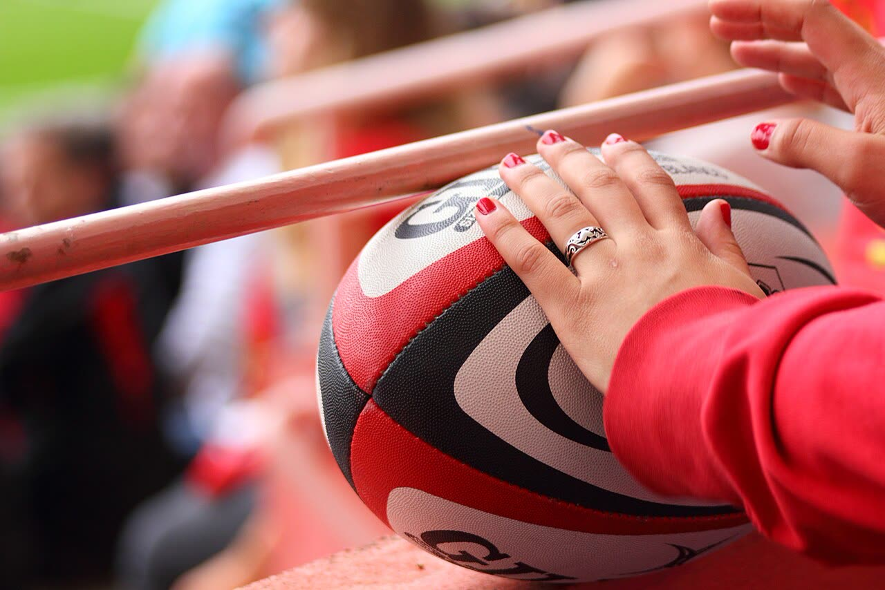
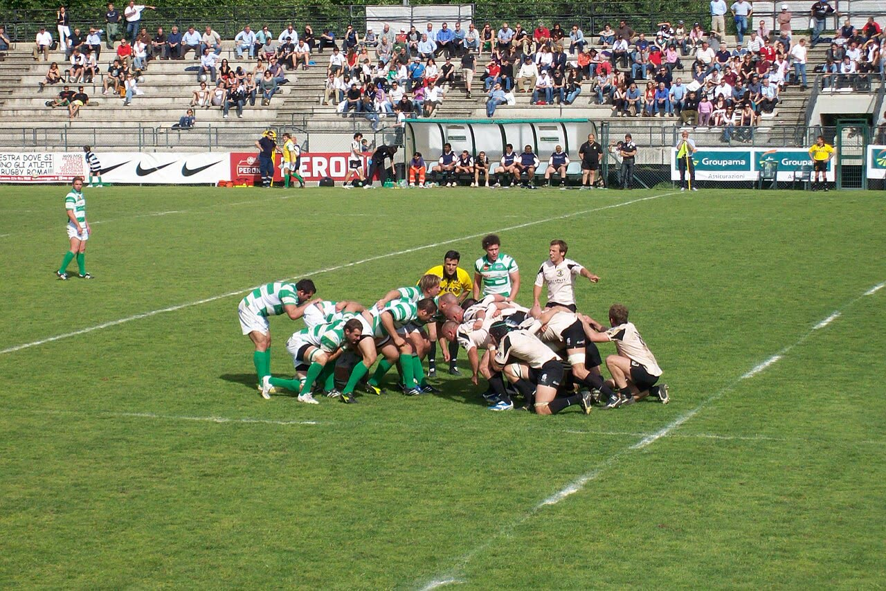
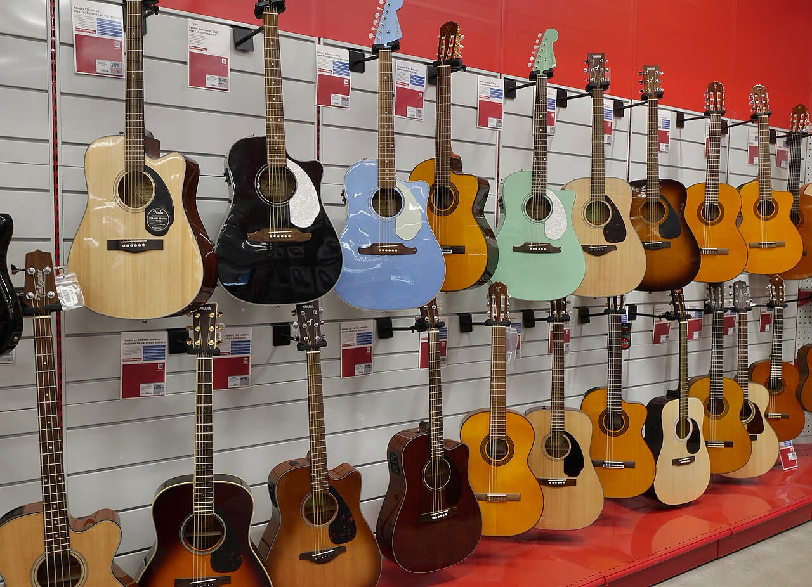

Bonjour Ezra !
Aujourd'hui, tu révises le futur : pour parler de ton prochain match, de tes vacances ou de quand tu seras grand. Today you are revising the future tense: to talk about your next match, your holidays or what you will do when you're older.
- Lis d'abord le rappel de grammaire. First read the grammar reminder.
- Appuie sur 🔊 pour écouter les phrases. Tap 🔊 to listen to the sentences.
- Chaque réponse est corrigée tout de suite, avec une explication. Each answer is corrected straight away, with an explanation.
- Tes erreurs arrivent dans le cadre « À revoir », à la fin de la page. Your mistakes appear in the “À revoir” (to review) box at the end of the page.
Le rappel de grammaireGrammar reminder
1. Le futur des verbes en ‑ER The future tense of ‑ER verbs
On utilise le futur pour parler de ce qui arrivera plus tard : demain, samedi prochain, l'été prochain, quand tu seras grand. We use the future tense to talk about what will happen later: tomorrow, next Saturday, next summer, when you're older.
l'infinitif entier + la terminaison
the whole infinitive + the ending
- je jouer
ai - tu jouer
as - il, elle jouer
a - nous jouer
ons - vous jouer
ez - ils, elles jouer
ont
un sport → jouer au, à la
un instrument → jouer du, de la

2. Les quatre champions : être, avoir, aller, faire The four champions
Ces quatre verbes ne gardent pas l'infinitif : leur début change. Bonne nouvelle : les terminaisons sont toujours les mêmes, -ai, -as, -a, -ons, -ez, -ont. These four verbs don't keep the infinitive: their beginning changes. Good news: the endings are always the same.
- je
ser ai - tu
ser as - il, elle
ser a - nous
ser ons - vous
ser ez - ils, elles
ser ont
- j'
aur ai - tu
aur as - il, elle
aur a - nous
aur ons - vous
aur ez - ils, elles
aur ont
- j'
ir ai - tu
ir as - il, elle
ir a - nous
ir ons - vous
ir ez - ils, elles
ir ont
- je
fer ai - tu
fer as - il, elle
fer a - nous
fer ons - vous
fer ez - ils, elles
fer ont
Les exercicesThe exercises
Mon samedi de rêve
Ezra, imagine ton samedi de rêve ! Écris 5 ou 6 phrases au futur. Utilise être, avoir, aller, faire et au moins un verbe en ‑ER. Ezra, imagine your dream Saturday! Write 5 or 6 sentences in the future tense. Use être, avoir, aller, faire and at least one ‑ER verb.


Pour commencer tes phrases To start your sentences
Copie ton texte et envoie-le à Irène pour la correction. · Copy your text and send it to Irène for correction.